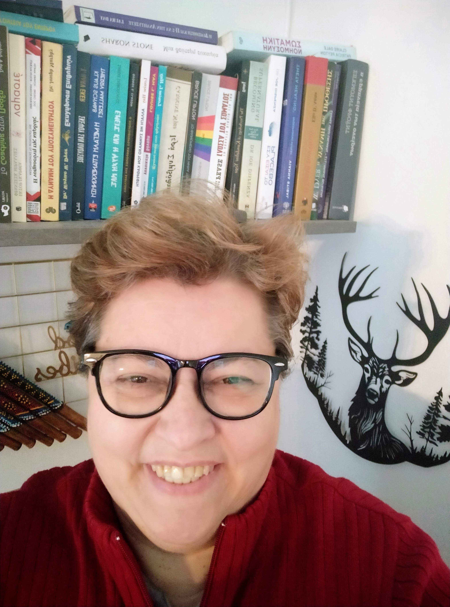

Loukia Kotsibou
Web Developer | Digital Preservation Developer
PROFESSIONAL PROFILE
As an experienced professional in the field of Information Technology, I combine expertise as a Web Developer and Programmer with strong Project Management skills. I have a proven ability to design, organize, and implement digital projects, including the management of digital collections data. Furthermore, my experience in processing administrative and financial information, as well as managing a small business, enhances my capacity for effective administrative support. Utilizing NLP techniques for efficient communication and collaboration, I am results-oriented, methodical, and precise, maintaining excellent communication skills to build successful partnerships.
PROFESSIONAL EXPERIENCE
Project Manager | Lambakis Family Archive AMKE 2012–2025
Project Manager for the organization, planning, and execution of an archival digitization project Lambakis Family Archive AMKE 2012–2025 Responsible for the digitization of approximately 8,000 primarily paper-based archival items. Management and coordination of seasonal staff (10 people) across various specialties.
Key responsibilities:
- Cataloguing of material, based on the international Dublin Core metadata standards
- Classification and physical preservation of items in acid-free boxes and on structured shelving systems reflecting the digital file architecture
- Digitization of documents, including image processing, file organization, and uploading to the digital repository aol-apothetirio.com
- Communication and collaboration with Professors and Researchers (Archaeologists, Historians, Art and Photography Historians), museums (e.g., BXM, Louvre), libraries, the Ministry of Culture, and the General State Archives of Greece (GAK) lending of material for exhibitions and assignments
Front-End Developer & Omeka Administrator – Website Design and Development Lead
- Created and maintained a digital repository using Omeka Classic, an open-source web publishing platform (installation, customization, updates, and maintenance) on a hosting server https://aol-apothetirio.com/
- Developed and maintained the main website of the Lambakis Family Archive (installation, customization, updates, and maintenance) hosted on the archive's own server aol.org.gr , in Wordpress
- Performed technical configuration of the platform per item category; migrated data from the old server using the Omeka API
- Created and managed the archive’s digital presence on social media platforms (Facebook & Instagram)
Achievements
- Presented the Digital Repository Project at the Christian Archaeological Society ΧΑΕ) Conference in May 2025.
Received highly positive feedback, particularly regarding the platform’s functionality and ease of access to information.
- Attracted over 8,000 followers across Facebook and Instagram through strategic content creation and audience engagement.
Web Developer | Cocoon Ecoclima Solar Power Systems 2018
- Developed a new website (Csun) and integrated the “Victron Energy store” into an existing e-commerce platform.
- Provided office IT support, including installation of computer networks and peripheral devices.
Responsible for the overall organization and management of office financial data | Ison Psychometrica, Advanced Management Systems Applications Company 2016-2017
- Developed a customized accounting and invoicing system using “Elorus”
- Managed financial operations, including cash flow, payroll, procurement, taxation, and accounting
- Provided technical support to clients on psychometric software; handled troubleshooting and problem resolution
- Delivered IT and technical support for office operations
Web Developer
- Developed and maintained multiple websites (e.g., Ison.gr, Career Orientation portal) using Joomla and WordPress CMS platforms.
Business owner and director | Bueno Pitta (Fast Food Company) 2006-2011
- Managing a team of 14 employees
- Managed and optimized workflow to ensure efficient and compliant meal production and delivery
- Implemented and configured a computerized food delivery system connected to cash registers
- Led marketing and sales promotion campaigns; designed and distributed 40,000 printed materials every six months
- Oversaw financial performance, including cost analysis, pricing, food cost control, and payroll
Achievements
- Increased turnover by 2% within the first six months of operation
Front-End & UX Developer, e-shop manager | Lase S.A., Computer and consumables wholesale company 2004-2006
- Developed a dedicated website for a computer series (LASE) using Dreamweaver and Flash
- Managed and updated the e-shop, handling order processing (Lase.gr)
- Maintained communication and offered support to partners and clients
- Assisted with technical support for hardware and Navision accounting software
Computer Technician | Digimark S.A.., IT and Telecommunications Company 1998–2003
- Managed procurement of IT hardware, assembled and tested computers, and performed installations
- Installed and configured networks, including cabling, racks, and settings for both local and remote networks
- Provided technical support for computers and peripheral devices, both remotely and on-site
Computer Technician | Simplex Ltd., IT Company 1996–1998
- Supervised technical department tasks and warehouse management.
- Delivered technical support for computers and peripherals, both remotely and on-site
Computer Technician | BrainTrust S.A., IT Company 1994–1996
- Assembled and tested computers on a high-volume production line
- Delivered technical support for computers and performed system upgrades
- Adjusted CRT monitor geometry for optimal display quality
EDUCATION AND CERTIFICATIONS
- Computer Engineer |Greek-speaking College “ΞΥΝΗ” (1993)
- System Analysis and Programming | T.E.L. Chalandri (1990)
- IBM Desktop & Laptop Service | IBM Hellas (2002)
- HP Inkjet & laser service & maintenance | HP Hellas Technical Dpt (2002)
- Web Developer & Designer | New Horizon (2001)
- Implementing Microsoft Small Business Server 2000 | Itec Consultancy, Microsoft Certified Technical Education Center (2001)
- 2520 Deploying Microsoft Windows XP Professional | Microsoft Certified – Technical Education Center (2001)
MORE EDUCATION
- Certified Master Practitioner NLP | INLPTA (International NLP Trainers Association) (2021, 2023)
- mBit (Multiple Brain Integration Techniques | mBit International (2023)
- Micro Expression and Body Language Practitioner | Paul Ekman International (PEI) (2021)
SEMINARS
- Advertising & Design | Πανοραμα Design (Φακινος) 2011
- Photography and Digital Photo Editing |“Σπίρτο” 2016
- Personal Development (Reflexology) | Ραπτοπούλου Σοφία (2013)
Technical Skills
- Web Development & Social : Xampp, Web server Administration (Plesk, Cpanel), WordPress, Joomla, Omeka, API, Wix, Youtube, Facebook , SEO Skills, Google, Analytics & search Console
- Web Design & Media: HTML5, CSS, Dreamweaver, Flash, CMS
- Operation System: Windows OS, UNIX
- Applications: MS Office, Adobe Acrobat, Illustrator
- Accounting management system: Singular, Eurofasma, Navision, Elorus
- CRM and Communication Bitrix24, Zoho, Lotus Domino (IBM)
- Programming Languages: GWBasic, DBASE III, Pascal, Cobol, Assembly
Skills
- Strong communication skills
- Empathy and active listening
- Respectful and professional demeanor
- Conflict resolution abilities
- Flexibility and problem-solving mindset
WEB PROJECTS
My Hobbies | Contact with me